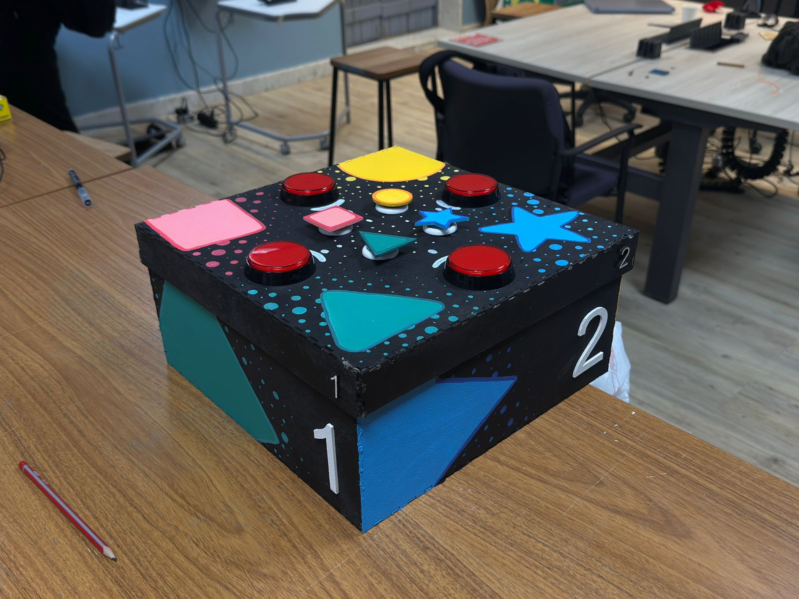

Tátilquiz
a game develloped in arduino, with an inclusive foucus on visually impaired people, using a tactile interface and audio feedback to create an engaging and accessible gaming experience.

fitplanner
a website develloped on front and back end, using HTML, CSS, JavaScript and Python, with the purpose of helping users to create and manage their workout routines, providing a user-friendly interface and personalized features to enhance their fitness journey. I was a part of the tam responsable for the back-end develoment with python.